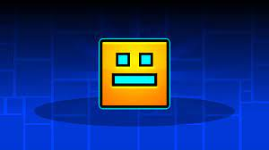

Geometry Dash (раніше — Geometry Jump) — незалежна аркадна відеогра, випущена в 2013 році. Розробником гри є Роберт Топала (також відомий як RobTop або RubRub), засновник компанії RobTop Games[2]. Geometry Dash створена на основі гри The Impossible Game. Гра підтримує як смартфони[3][4], так і персональні комп'ютери (платформа Steam)[5]. Гра містить 21 офіційний рівень (а також 1 таємний, 3 з Meltdown, 10 із World та 3 з SubZero) з унікальною фоновою музикою. Основне завдання гравця — за допомогою кубика та інших засобів дістатися кінця рівня, оминаючи перепони. Якщо гравець зіткнеться з перепоною, рівень починається спочатку. У грі також є редактор рівнів, доступний тільки в повній версії гри.
гровий процес в Geometry Dash сам по собі дуже простий. Гравцю потрібно натискати на сенсорний екран (на мобільному пристрої) або ліву клавішу миші, Пробіл або стрілку вгору (на ПК) і персонаж виконуватиме певні дії. Усі рівні (за винятком трьох — Clubstep, Theory of Everything 2 та Deadlocked) розблоковані з початку, тож їх можна проходити не за порядком. На шляху гравець може зібрати до трьох секретних монет на кожному офіційному рівні, які знаходяться у схованих або важкодоступних місцях. Також у грі є спеціальні сфери і портали, які дозволяють виконувати певні дії. Існують два режими гри: звичайний і режим практики.
абори рівнів (англ. Map Packs) — це набори користувацьких рівнів, вибраних RobTop'ом. Усього в грі є 65 таких наборів. Кожний набір має по три рівні схожої складності та кількості зірок за проходження. Якщо всі рівні в наборі були пройдені, Ви отримаєте додаткові зірки та секретні монети. За проходження наборів рівнів Ви також отримаєте різні нагороди: досягнення, нові іконки, кольори та сліди.
Втрачені випробування (англ. The Lost Gauntlets) дуже схожі на набори рівнів і на локації з Geometry Dash World — у кожному випробуванні є по п'ять рівнів на певну тематику, а доступ до кожного відкритий з самого початку, окрім хаотичного та демонічного випробувань. За кожний пройдений рівень даються діаманти, створюючи схожість із щоденними рівнями. Після проходження усіх рівнів випробування відкривається нагорода в вигляді випробування, в якому знаходяться діаманти, уламки сили (залежно від виду випробування) й іконки (а також кольори).